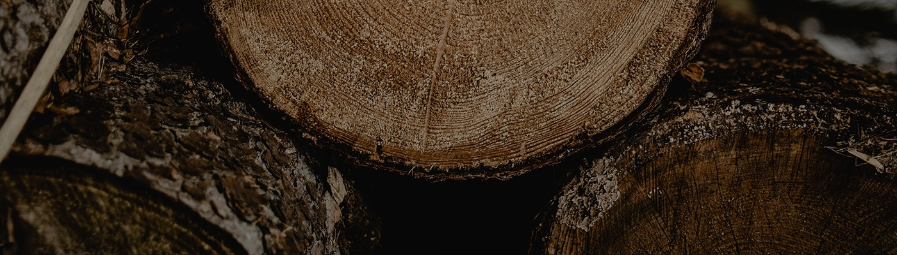
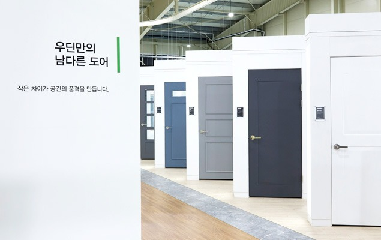
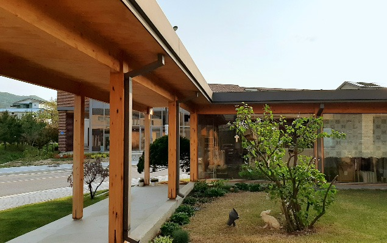
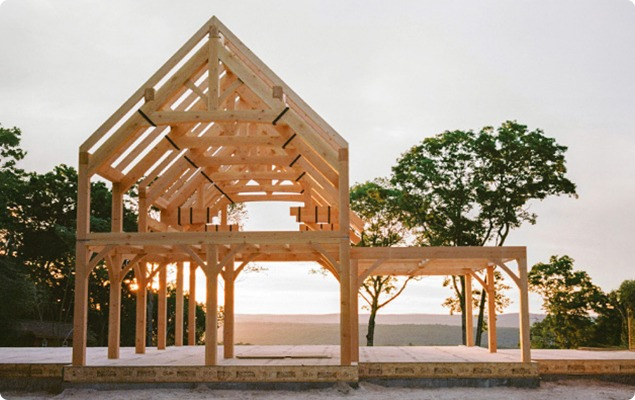
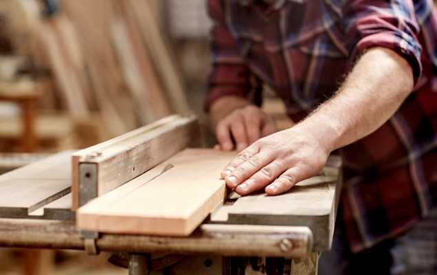
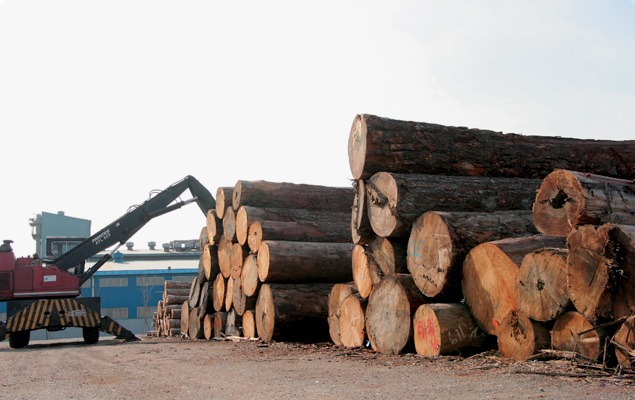

HISTORY&CERTIFICATION
연혁

1982-PRESENT
1982년 특수목 전문 기업 태원목재를 시작으로
45여 년동안 나무만을 생각하며 한길만을
걸어왔습니다.

2019-
PRESENT
-
2023.12
발포 자동화 설비라인 구축
-
2023.06
리프 인테리어필름 브랜드 리뉴얼 런칭
-
2023.02
코리아빌드 참가 (in 킨텍스)
-
2022.09
사내근로복지기금 법인설립
-
2022.05
도어 자동화 설비라인 구축
-
2022.05
제 1공장 확장 이전 (인천시 서구 원창동 435-7)
-
2022.03
모범납세자 표창 수상
-
2021.04
본사 쇼룸 오픈
-
2020.03
(주)우딘 시스템 창호 트로칼 브랜드 런칭
-
2019.12
태원목재(주) 합병_㈜우딘 목재사업부 명칭 변경
-
2019.05
(주)우딘 피노 도어 브랜드 런칭
-
2019.02
시스템 창호 설비라인 구축
2014 - 2018
-
(주)우딘 시그니처 브랜드 런칭
2018.05 -
제 3공장 완공 (인천시 서구 원창동 391-33)
2018.02 -
27회 인천광역시 산업평화대상 수상 (인천광역시장 유정복)
2017.12 -
제 23회 보람의 일터 대상 수상 (인천경영자총협회)
2016.03 -
제품인증서 KS마크 인증 획득 (한국표준협회)
2016.02 -
친환경건축자재 우수등급 HB마크 인증 획득
2015.12 -
(한국공기청정협회)
2015.12 -
(주)우딘 본사 이전
2015.09 -
인천광역시 품질우수제품 선정 (인천광역시장)
2014.11 -
태원_내화구조인정서 획득 (한국건설기술원)
2014.09 -
태원목재(주) 본사 이전 (인천시 서구 원창동 476-1)
2014.01


2011 - 2013
-
2013.12
제 2공장 완공 (인천시 서구 원창동 437-18)
-
2013.04
INNO STAR, GREEN STAR 인증 획득 (한국능률협회인증원)
-
2013.02
디자인 특허 등록 획득 (특허청)
-
2012.12
태원_인천광역시 비젼기업 선정
-
2012.12
업계 유일 친환경건축자재우수등급 HB마크 인증획득
-
2012.12
(한국공기청정협회)
-
2012.11
태원_중소기업청장상 수상
-
2011.10
제품인증서 KS마크 인증 획득 (한국표준협회)
2006-2010
-
벤처기업등록 (기술보증기금)
2010.06 -
기술혁신형 중소기업(INNO-BIZ) 인증 획득 (중소기업청)
2010.01 -
태원_한옥사업부 신설 - 전자동 맞춤기계(Pre-Cut) 도입
2010.01 -
ISO 9001 인증 획득 (품질경영시스템)
2009.12 -
기업부설 연구소 인증 획득 (한국산업기술진흥협회)
2009.12 -
ISO 14001 인증 획득 (환경경영시스템)
2009.09 -
유통사업부 태원 T&I 법인 설립
2006.12 -
우드인 (자회사) 설립
2006.12


2001-2005
-
2005.02
태원_전문건설업등록 인천서구 2005-01-04호
-
2005.02
(실내건축공사업)
-
2004.02
태원_목조주택 사업부 신설
-
2004.02
한국소방검정공사 방염 인증 획득 (한국소방산업기술원)
-
2003.02
(주)우딘 사옥 신축 이전 (석남동)
-
2002.02
(주)우딘 신설 (태원목재(주) 계열사)
-
2001.09
가좌동 공장 증축 (인테리어 리모델링 사업부 신설)
-
2001.08
태원_ISO 9001 (품질경영시스템) 인증 획득
-
2001.08
태원_KSA 9001 (국제품질경영시스템) 인증 획득
1982-1996
-
태원목재(주) 법인 전환
2010.06 -
문짝, 창호공장 증설
2010.01 -
가좌동 공장 신축 이전 (인천시 서구 가좌동 602-10)
2010.01 -
대원제재소 설립
2009.12
